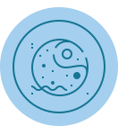

Score:

{{monScore}}

{{ennemiScore}}
Othello (aussi connu sous le nom Reversi) est un jeu de société combinatoire abstrait opposant deux joueurs. Il se joue sur un tablier unicolore de 64 cases, 8 sur 8, appelé othellier. Les joueurs disposent de 64 pions bicolores, noirs d'un côté et blancs de l'autre. En début de partie, quatre pions sont déjà placés au centre de l'othellier : deux noirs, en e4 et d5, et deux blancs, en d4 et e5. Chaque joueur, noir et blanc, pose l'un après l'autre un pion de sa couleur sur l'othellier selon des règles précises. Le jeu s'arrête quand les deux joueurs ne peuvent plus poser de pion. On compte alors le nombre de pions. Le joueur ayant le plus grand nombre de pions de sa couleur sur l'othellier a gagné.
Score:
{{monScore}}
{{ennemiScore}}
|
|